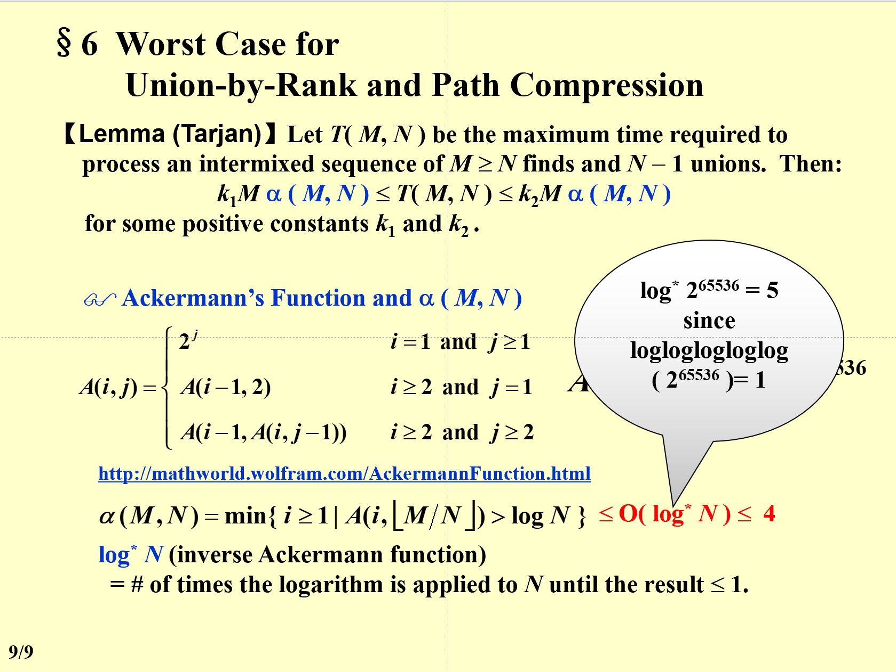

DS
教材¶
《Data Structures and Algorithms Analysis in C》
成绩构成¶
- 作业 10%
- 小测 10%
- 期中 15%(冬学期第二周)
- 期末 40%(都会考) (皆为单独命题考试，内容以PPT为主)
- 大作业 30% (Hard，互评50%，助教50%) Bonus:发给助教，含代码和report
大作业提交¶
交两次，第一次在PR中互评，第二次在final中交给助教
01 What to analyze¶
Time & Space complexity(machine & complier dependent)
- T_{avg}(N)\enspace\& \enspace T_{worst}(N)
定义¶
- T(N) = O(f(N)) : if there are positive constants c and n0 such that T (N) \leq c \cdot f (N) for all N \geq n_0. (即上界)
- T(N) = \Omega(g(N)) : if there are positive constants c and n0 such that T (N) \geq c \cdot g (N) for all N \leq n_0. (即下界)
- T(N) = \Theta(h(N)) : if there are positive constants c and n0 such that T (N) = c \cdot h (N) for all N = n_0. (即确定性的算法，如if)
- T(N) = o(p(N)) : if there are positive constants c and n0 such that T (N) \geq c \cdot p (N) for all N \leq n_0. (无限接近不等于)
运算法则¶
- 相加：取最大
- 相乘：相乘
- 当T(N)为k阶多项式时,T(N) = \Theta(N^k)
- log_k N = O(N)，对任意的k
一般规则¶
- for循环：T = 循环内部的代码 * 循环次数
- 嵌套for循环：循环内部的代码 * 每一层循环的次数的乘积
- 顺序执行的代码：由最大的决定
-
分支语句：T = 条件判断 + 两个分支中较大的那个
if (condition) S1 else s2 -
递归： (\frac{3}{2})^2 \leq Fib(N) \leq (\frac{5}{2})^n
分治法¶
将一个n的方法变为\frac{n}{2}的方法
一个坑:O(log(N)^2 )= O(N)
02 列表，栈，队列¶
抽象数据类型（ADT）¶
Data Type = { Objects } + { Operations }
List(Linear List)¶
- 数组实现(Sequential List)
- 链表 (Linked List)
- dummy node：头结点，不存储数据，只是为了方便操作（即表头）
栈：LIFO¶
-
操作：Push（进栈），Pop（出栈），Top
从空栈中pop，或者向满栈push，都会导致出错（仅在数组实现时产生）
-
栈实现
- 减少free和malloc：设置recycle bin
-
应用之一：括号匹配
-
用栈实现，遇到左括号入栈，遇到右括号出栈，最后栈空则匹配成功
-
应用之二：计算器实现
用栈实现，将中缀表达式转换为后缀表达式->计算后缀表达式
- 表达式转换：运算符入栈
读入优先级\geq原先优先级：入栈
关于括号：左括号在入栈前优先级最高，在入栈后优先级最低
- 表达式转换：运算符入栈
-
应用之三：函数调用
队列：FIFO¶
- 操作：Enqueue（入队），Dequeue（出队），Front（头，出队），Rear（尾，入队）
- 循环队列：用数组实现，头尾相接，头指针指向队头，尾指针指向队尾的下一个位置
- 判断循环队列是否已存满：
- 使用size变量
- 使用一个空间作为标记
03 树¶
一、属性¶
- 节点的度 ::= 节点的子树数量。例如，度(A) = 3，度(F) = 0。（对于二叉树，节点的度可以是0、1或2）
- 树的度 ::= 树中所有节点的最大度。例如，度(T) = 3。
- 父节点 ::= 拥有子树的节点
- 子节点 ::= 拥有父节点的节点（母节点的子树的根）
- 兄弟节点 ::= 拥有相同父节点的节点
- 叶节点 ::= 没有子树的节点
- 路径 ::= 从一个节点到另一个节点的路径（唯一的路径）
- 路径的长度 ::= 路径上边的数量
- 节点的深度 ::= 从根节点到该节点的路径长度，根节点的深度为0
- 节点的高度 ::= 从该节点到叶节点的最长路径长度
- 节点的祖先 ::= 从根节点到该节点的所有节点（a node's ancestor 不是 its parent）
- 节点的后代 ::= 从该节点到叶节点的所有节点
二、实现（链表）¶
三、树的遍历（四种）¶
- Preorder：先访问根
- Postorder：最后访问根
- Level-order
- Inorder：最先访问根
#### 1. 性质- 叶的顺序不变
- 任何数都可以转换成一个二叉树（见PPT04P06）
- 仅仅给出前序和后序，无法唯一确定一棵树
四、Inordered Threaded Bindary Trees¶
Thread == Ture:原来是一个空指针 - 为每个节点添加一个线索，指向中序遍历的后继节点 - 为每个节点添加一个线索，指向中序遍历的前驱节点
树的种类¶
- 二叉树
- BST
- 满二叉树：全满(也是完全二叉树)
- 完全(Complete)二叉树：除了最后一层，其他层都是满的，且最后一层的节点都靠左
- 左子树的数量大于等于右子树（注意BST不是！）
五、Properties of Binary Trees¶
- 对于非空树, n0 = n2 + 1 （n0为叶节点数，n2为度为2的节点数，即有两个子树的节点）
坑¶
- If on the 9th level of a complete binary tree (assume that the root is on the 1st level) there are 100 leaf nodes
- 第九层的节点有100个叶节点，意味着还有第十层
- 注意叶节点不一定最后一层，对于完全二叉树来说，也可能在倒数第二层
04 Binary Search Tree¶
正序：increasing order
性质¶
- 左子树的所有节点的值均小于根节点的值，右子树的所有节点的值均大于根节点的值
- 键值全为整数且不同
- 查找操作：T(N) = O(d)，其中d是树的深度。
- 插入操作
- 删除操作：
- 删除叶子节点：将其父节点的链接设置为NULL。
- 删除度为1的节点：用其唯一的子节点替换该节点。
- 删除度为2的节点：
- 步骤1：用左子树中最大的节点或右子树中最小的节点替换该节。
- 步骤2：从子树中删除替换的节点。
- 最好情况：O(logN)，当树为完全二叉树时。
- 最坏情况：O(N)，当树类似链表时。
操作¶
- 插入
- 从根节点开始，比较插入值和节点值的大小
- 不会删除原有节点
-
树的高度和插入顺序有关
-
删除
- 叶子节点：直接删除，将其父节点的链接设置为NULL，再free它
- 度为1的节点：将其值替换成他的子节点，再free它的子节点
- 度为2的节点：用左子树中最大的节点或右子树中最小的节点替换该节点，再free该子节点（注意是左子树而不是左子节点）
时间复杂度分析¶
对于比较平衡的BST来说，插入和删除的时间复杂度都是O(logN)。但是，如果插入的顺序是有序的，那么BST就会退化成链表，此时插入和删除的时间复杂度都是O(N)。
04 堆 (Priotiry Queues)¶
一、操作¶
- 插入
- 删除
二、二分堆(Binary Heap == Binary Queue)¶
1.结构特性¶
- 完全二叉树
graph TD
A((1))-->B((2))
A-->C((3))
B-->D((4))
B-->E((5))
C-->F((6))
C-->G((7))
D-->H((8))
D-->I((9))- 用数组实现
- 从1开始编号，0不使用
- 对于某个节点：（若结果符合条件，否则就说明没有）（这个性质成立的必要条件是coplete binary tree）
- 父节点编号为(对于某个节点)
- 左子节点编号为2i
- 右子节点编号为2i+1
2.顺序特性¶
 min tree:父节点小于等于子节点，最小在树根（注意这里左节点不一定小于右节点）
min tree:父节点小于等于子节点，最小在树根（注意这里左节点不一定小于右节点）
3.基础堆操作：基于上面的要求，完成目的¶
- Insert（向上置换）
- DeleteMin（向下置换）
- BuildHeap
- 从最后一个非叶节点开始，percolate down(注意不是从根节点开始一个一个插入)
- 复杂度：O(N)
- 最小树转最大树
- 根据最小堆的输出，再建一个堆即可，消耗O(N)的时间
05 Disjoint Sets 并查集¶
1.等价关系R¶
定义在集合上的关系 - Reflexive 自反性：aRa - Symmetric 对称性：aRb\ \Leftrightarrow \ bRa - Transitive 传递性：aRb \wedge bRc \Rightarrow aRc
2.动态等价关系¶
3.基本操作¶
并查的过程，就是将本身分散的节点之间建立联系的过程
- MakeSet(x)：建立一个新的集合，该集合中只包含元素x
- Set Union(x,y)：将包含元素x和y的两个集合合并成一个新的集合
- S_1 \cup S_2：以S_1的根为根（谁在后边，改的就是谁的根）
- Find(x)：找到包含元素x的集合的名字
4.实现¶
-
数组实现：S[Elements]= The element's parent
- S[0]不使用
在这里，我们假定S是一个数组，数组的下标是元素的名字，数组的值是元素的父节点的名字。对于根节点的元素，可以有多种表示方法，比如0，-size等等。注意S表示的是所有元素（森林），其中可以有很多棵树（集合）
S[Root] = 0 （可能有好多个Root）
SetType Find ( ElementType X, DisjSet S ){ for ( ; S[X] > 0; X = S[X] ) ; return X ; } - S[0]不使用
-
链表实现
5.Smart Union Algorithms¶
-
Union by Size
S[Root] = -Size
此时有Height < \lfloor log(N) \rfloor+1
-
Union by Height
这些手段都是针对“并”这个过程来说的。举个例子，以按大小合并为例，当我们要合并两个集合时，我们可以先判断两个集合的大小，然后将小的集合合并到大的集合中，这样就可以保证树的高度不会太高，从而提高Find的效率。
6.路径压缩¶
在Find的过程中，将路径上的所有节点也顺便都连接到根节点上 - 和Size Union一起使用 - 和Height Union一起使用：Union by Rank(Estimated Height) 最差情形：
0位不使用的ADT¶
- 并查集
- 二分堆（0作哨兵节点）
- 带dummy node的链表
---以上为期中考试内容--- 期中题型 判断、选择、程序填空、函数，60分钟
排序¶
默认升序
堆排序¶
- 不断删除最小值，直到堆为空
- 复杂度：O(NlogN)

06 图论¶
1.图的定义¶
- 顶点集V
- 边集E
- 有向图：有向边（圆括号）
- 无向图：无向边<尖括号>
- 限制
- 不能自身指向自身
- 不能重复
错误示例：graph TD A((1))-->B((2)) A-->B C((3))-->C
- 完全图：任意两个顶点之间都有边
- 简单路径：路径上的顶点不重复
- 环：起点和终点相同的路径
- Component of a undirected：极大连通子图
- 树
- DAG:有向无环图
- 弱联通：去掉所有的有向边的方向后，得到的无向图是连通的
- 强连通：任意两个顶点之间都有路径（包括单个节点）
- 度degree：与该顶点相关联的边的数目
对于A:Indergree = 1,Outdegree = 2,degree = 3graph TD A((1))-->B((2)) A-->C((3)) D((4))-->A - 图的邻接矩阵：A_{ij} = 1，表示从i到j有一条边
邻接表(adjacency list)：以链表来表示关系¶
 - 出度计算：作邻接表，计算表有几个节点
- 入度计算：作逆邻接表，计算表有几个节点
- 出度计算：作邻接表，计算表有几个节点
- 入度计算：作逆邻接表，计算表有几个节点
Adjacenty Multilist¶
带权表¶
拓扑排序¶
- 有向无环图
- 不是真正的排序，而是生成一个符合顺序的序列
- 时间复杂度：O(V+E)
- 应用：
- 判断有没有环
- 依赖关系
最短路¶
不带权最短路--广度优先搜索¶
带权最短路（无负权时）--Djikstra's Algorithm¶
带负权最短路¶
有向无环图(DAG)的最短路--拓扑排序¶
网络流问题：需要学会计算和分析复杂度¶
最小生成树(minimum spanning tree)¶
生成树¶
- 包含原图上所有顶点的树（对于某个（带权）无向图来说）
- 点是原来的点，边是原来的边
- 要求：图是连通的
- 最小生成树：使各边权重之和最小的生成树
DFS¶
欧拉回路¶
欧拉回路定义：¶
- 从一个点出发，（不重复地）经过所有边，再回到出发点
欧拉回路存在条件：¶
- 所有点的度均为偶数
更弱一点的条件：Euler Tour¶
- 有且仅有两个点的度为奇数，此时可不重复地经过所有边，但不一定要回到出发点
哈密顿回路¶
- 从一个点出发，（不重复地）经过所有点，再回到出发点（不一定要经过所有边）
排序¶
概念¶
- 内部排序：待排序的记录存放在内存中
- 外部排序：待排序的记录存放在外存中
插入排序¶
- 任何通过交换相邻元素进行排序的算法(Simple Sorting Algorithm)都可以通过平均复杂度z至少为\Omega (N^2)
- 证明：假设有n个元素，每次交换都会减少一个逆序对（至少插排不会增加逆序对），而逆序对的数量平均为\frac{n(n-1)}{4}，因此至少需要\Omega (N^2)次交换
希尔排序¶
- 分组策略：h_1 = \lfloor N/2 \rfloor,h_{k+1} = \lfloor h_k/2 \rfloor （这里h_1代表的是第一次分组的间隔）
Hibbard's increment sequence¶
- h_k = 2^k-1
- 时间复杂度：O(N^{3/2})
- 平均：O(N^{5/4})
- 最好：O(N)
Sedgewick's increment sequence¶
- h_k = 4^k+3*2^{k-1}+1
- 时间复杂度：O(N^{4/3})
- 平均：O(N^{7/6})
- 最好：O(N)
堆排序¶
Hashing¶
坑： - Growing Speed：不管常数e.g Nlog(N^2) = Nlog(N^3) - parent的parent不是parent了 - 快排时，若pivot在边角，则会少一个位置正确的项 - union(a,b)：把b并到a里面(如果不考虑unionbysize的话)